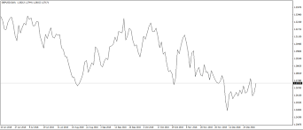
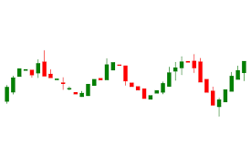
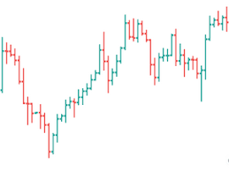

Forex (FOReign EXchange) is a global interbank market that was established in the 70s of the 20th century, when international trade moved from fixed exchange rates to floating ones. The money of the countries-participants of the Forex market ceased to have official gold value. At the same time, the exchange rate of one currency with respect to another one began to be determined solely by the supply and demand of the free market participants, and the constant change in the supply and demand in the market causes the exchange rate to move in one direction or another, which, in fact, benefits the currency trader. Since that time, Forex has become the most dynamic and liquid market. In addition, it is the only market in the world working around the clock.
Where is the Forex market?
Forex does not have any specific trading establishments. This is a network of telecommunicationally interconnected currency dealers dispersed in all the world's leading financial centers, working around the clock. Forex is an interbank or over-the-counter market, since all transactions are concluded between counterparties over the phone or using electronic technologies.
What to sell and purchase in the Forex market?
Any market implies trading in particular products. The main product of the Forex market is the national currencies of different countries. You can trade in almost any currency through brokers. The most liquid currencies are: US dollar (USD), Euro (EUR), Japanese yen (JPY), British pound (GBP), Swiss franc (CHF). In the Forex market, currencies are always traded in pairs. The traditional record of a currency pair is as follows: base currency/quote currency (EUR/USD). Further in the training process, we will consider this issue in more details.
Who trades in the Forex market?
The main participants of the Forex market are as follows:
Commercial banks;
Currency exchanges;
Central banks;
Companies that carry out foreign trade operations;
Investment participants;
Brokerage companies;
Private individuals;
What is the schedule of the Forex market?
Forex operates 24 hours a day, 5 days a week (except for national holidays).
Traditionally, we highlight three basic sessions (Moscow +4 GTM) in the schedule of the Forex trade sessions:
Asian trade session: 04:00 – 12:00;
European trade session: 10:00 – 18:00;
American trade session: 17:00 – 01:00.
Africa trade session: 2:00 – 22:00.
We can also see an additional trade session for Australia and Oceania, which is held in the morning hours: 02:00 - 10:00
Currency Rate
What are currency pairs?
In the Forex market, trading is carried out in currency pairs, which means that you purchase or sell currency pairs. The price of the currency is always going up or going down depending on another currency. For example, the euro (EUR) and the dollar (USD) form the euro-dollar currency pair (EUR/USD). If you purchase this currency pair, then you think that the euro will increase in price with regard to the dollar, and vice versa, if you sell this currency pair, then you think that the euro will become cheaper with regard to the dollar. For example, if you state that the US dollar is going down, it is unclear what is going on, because USD may go up as against the Australian dollar, and go down as against the euro.
There are eight major currencies
U.S. Dollar (USD)
European Euro (EUR)
Japanese Yen (JPY)
British Pound (GBP)
Swiss Franc (CHF
Canadian Dollar (CAD)
Australian/New Zealand Dollar (AUD/NZD
South African Rand (ZAR)
Basic and quoted currency.
The currency that is the first in a currency pair is called the base currency, the second one is the quoted currency, i.e. we purchase the base currency for the quote currency. For example, USD/CHF 0.9500 means that 1 dollar (USD) costs 0.9500 Swiss franc (CHF).
Major Currency
The euro and US dollar: EUR/USD.
The US dollar and Japanese yen: USD/JPY.
The British pound sterling and US dollar: GBP/USD.
The US dollar and Swiss franc: USD/CHF
The Australian dollar and US dollar: AUD/USD.
The US dollar and Canadian dollar: USD/CAD.
The New Zealand dollar and US dollar: NZD/USD.
Minor and Exotic Currency Pairs
Currency pairs that are not associated with the U.S. dollar are referred to as minor currencies or crosses. These pairs have slightly wider spreads and are not as liquid as the majors, but they are sufficiently liquid markets nonetheless. The crosses that trade the most volume are among the currency pairs in which the individual currencies are also majors. Some examples of crosses include the EUR/GBP, GBP/JPY, and EUR/CHF.
Exotic currency pairs include currencies of emerging markets. These pairs are not as liquid, and the spreads are much wider. An example of an exotic currency pair is the USD/SGD (U.S. dollar/Singapore dollar).
What is quotation and how does it look like?
Like any product, the currency has a price which is called quotation or exchange rate. Quotation or exchange rate is the value of a monetary unit of one country, expressed in the monetary units of another country. The Forex quotation contains two components:
Selling rate or Bid (according to which the client sells the currency);
Buying rate or Ask (according to which the client purchases the currency).
For example, the EUR/USD price is 1.0343/1.0346, where the first price shows for how many dollars you can sell 1 euro (Bid price), and the second one shows how many dollars you need to buy 1 euro (Ask price).
What is a spread?
A spread is the difference between the selling and buying price at the same time. For example, if the EUR/USD quotation is currently 1.3800/1.3804, then your spread will be equal to 4 points. Consider the procedure for calculating the spread as in the following case. If we want to purchase euros for dollars, and see quotation of 1.2280/85, then this will result in purchasing at a higher price, i.e. at 1.2285. Now, let’s say, we want to close on the purchase, and a broker offers us the quotation of 1.2450/55. In this case, we are provided with a lower price of 1.2450. Thus, as a result of your transaction, the brokerage company will earn 5 points of profit.
What is a point?
A point is the minimum change in the Forex quotation (Point, Pips). Almost all currency quotations consist of five digits, and each of them has a comma after the first digit. The exception is currency pairs with the Japanese yen, where the number of digits after the full stop/comma is 2. The last digit in the currency quotation is a point, i.e. 0.0001. For example, the EUR/USD price was 1.1369, and it became 1.1372. They say that quotation has changed by 3 points.
How are quotations formed in the international currency market?
Quotations of currency pairs of the Forex market are not formed randomly. The formation of price quotations for each currency pair is influenced by a large number of factors:
Economic and political situation in the country;
News, expectations and rumors;
Incidents and cataclysms (force majeure);
Trading activity of the largest Forex market players and others.
How to Start Trading in the Forex Market
What is necessary to start trading in the Forex market?
Anyone can start trading in the Forex market. To do this, you need to choose a brokerage company, open a trading account on the broker's website, and make an initial deposit. As a rule, you open a trading account online. You will need to enter your details in the registration form: full name, email address, your login and password, which you will need to login on a site. After registration, a broker will provide you with a free program that allows making transactions in the Forex market, i.e. a trading platform.
A Forex broker is a company, a professional participant of the Forex market, which performs operations with securities on behalf of a client and at their expense on the basis of certain contracts and agreements. Many companies trade on the Forex market and a trader can choose the most suitable company.
A trader is a person who trades in various financial instruments and earns money with currency exchange rates.
A deposit is the amount of money that is paid into an account opened with a brokerage company to start trading in the Forex market.
How much money does one need to start trading?
The minimum deposit amount depends on a brokerage company that you choose for cooperation: from a few cents (micro-account) to several thousand dollars. You can start to trade by investing, for example, one dollar. In order to buy 100,000 units of the base currency, there is no need to make a similar deposit. How is this possible? A trader will have to deposit a certain pledge (margin), and a brokerage company will provide a loan. The ratio between the pledge and the amount received is called the leverage. The Forex leverage can be from 1:1 to 1:500. For example, you chose the leverage of 1:100. This means that having 100 c.u. as a deposit, you can make transactions with a lot of USD c.u. (100 c.u. * 100 (leverage) = 10,000). A bank does not earn commission for your transaction. Banks benefit from mobilizing your funds. Note that the larger the leverage, the more not only the profit, but also the possible losses.
How much can you earn?
The profit of a trader depends on many different factors. An average trader makes from 10% to 50% per month. There are months with excess profits: 100% - 500% or more. It's all very individual.
What is the essence of trading in the Forex market?
The essence of trading in the Forex market is opening a transaction to purchase or sell currency, and closing this transaction by the opposite operation (if you sold it, you need to purchase it and vice versa). Instead of saying "I purchased euros for dollars", or "I sold euros for dollars," traders use shorter words: "Purchase Euro-dollar", or "Sell Euro-dollar" (respectively). Thus, we purchase the euro-dollar currency pair (euro for dollars) in the hope that the euro will become cheaper against the dollar, and we will get profit by selling this pair.
Trading Platform and Opening a Demo Account
What is a trading platform?
This is the software that allows a trader to acquire the necessary information on the course of trading in the Forex market in real time as well as to make trading transactions. A trading platform is usually given to a trader by a brokerage company for free. The most popular trading platform to trade in Forex is MetaTrader4. Others are MT5, CTradeR, Mobile Metrader, TradingView and so on
You might want to ask the advantage of MT5 to MT4, Its simple.. MT5 has more trading opportunities and features than MT4,
How to open a demo account?
A demo account is a training account with a virtual deposit. When trading on this account, you do not earn anything and do not deposit your money. You have the opportunity to test your strength in trading under real market conditions without any initial investment. The validity of such an account is not limited. In order to open a demo account in a trading platform it is necessary to:
Download and install a platform on your computer.
Launch a trading platform.
Go to the "File" tab of the top platform menu.
Select the item "Open account".
Fill in all the fields of the registration form and confirm your details.
Once it has been done, you will have a training account in a company which platform you downloaded and installed. Write down your login and password (a trader's password allows you to make transactions on the account, and the investor's password is intended only to check on the activity in the account without influencing the course of trading). In the aftermath, you will use them to login on the account.
How Does a Trading Platform Work?
Now let's take a closer look at how a trading platform works
Chart Window.
The currency chart is displayed in the central part of a platform. The number of charts of currency pairs depends on the number of pairs, which a trader utilizes.
Chart Types.
There are three chart types in the MT4 or MT5 Terminal: bars, Japanese candlesticks, and lines. Chart types are switched using the buttons in the toolbar.
Timeframe.
An important property of the chart is its timeframe, or in another way, a time period for which a candlestick (bar) shows an instrument price. There are the following timeframes: 1, 5, 10, 15, 30 minutes, 1 hour, 4 hours, 1 day, 1 week, and 1 month.
Market Overview Window.
Here you can find information on the purchase and sale prices of currency instruments at the moment: Bid is the selling price, Ask is the purchase price. By right-clicking on a line with any currency pair, you can open a menu with the following tasks:
A new order opens a window that allows you to make a trading transaction (purchase, sell);
A chart window displays a chart of a tool;
A tick-by-tick chart displays a chart in "Market Overview", showing each price change (in seconds).
Navigator Window.
Here you can see a list of available accounts ("Accounts") that you have ever connected to. To start working with another account, you need to double-click on it with the mouse. In addition, this window contains a list of all indicators, advisors and scripts installed in a trading platform.
Trading Terminal Window.
Trading: this tab contains all the information on trading activity on the account: opened positions and orders as well as the current state of the account (current balance, free funds, etc.);
Account history: displaying information on completed trading operations, cash flow on the account (input, output);
Mailbox: a list of emails from the server of your dealing center is stored here;
Experts: logs of advisors or scripts;
Log: in this tab you can view the logs of all actions for the current session.
How to Trade with a Trading Platform
How to make a transaction?
How to make a transaction? In order to make your first transaction, you need to open a trading platform, authorize access to a demo account you created at the previous stage of this crash course, and select a currency pair that you will trade with. For beginners, we recommend trading with the EUR/USD. currency pair. So, find the euro-dollar currency pair in "Market Overview", right-click on the pair name, and select "New Order". You will see the following window:
Here you need to set a transaction volume which is measured in lots, Stop loss and Take Profit levels, and press the Sell button if the price goes down, or Buy if you forecast the strengthening of the euro against the dollar. Simultaneously, you can open an unlimited number of transactions. It depends on your deposit and leverage.
What is a lot?
This is the minimum transaction volume in the foreign exchange market. 1 lot = 100,000 units of the base currency. You can purchase a whole lot, and some of its part, for example, 0.01 lot is 1000 units, 0,5 is 50,000, etc.
Stop loss and Take Profit.
Stop loss is an order to automatically close a position when the price reaches the set price (in case the price is going a direction you did not expect), limit losses. On the contrary, Take profit is an order to close a position when the price attains a maximum, in your opinion, in order to fix the profit.
So, the position is open. In the tab "Trade" of your terminal you can see the current profit for your transaction. It is displayed in the last box "Profit".
You can close your transaction to fix the profit at any time. To do this, you need to right-click on the line with the transaction data and choose "Close transaction."
Technical Analysis
What is technical analysis?
This is a method of making price forecasts for any financial asset, which is based on mathematical calculations. At the same time, mathematical components are not taken into account. It is believed that prices in the future can be predicted by analyzing prices in the past.
Most traders rely on intuition and do not use any methods of market analysis (so-called "hit-and-miss fashion "). Such trading does not require strictly analyzing and rationalizing the market. However, even if you decide to use intuition in trading, then you should have some knowledge of the technical analysis.
Main Types of Charts
1. Linear Chart. This chart only shows the price at the time of completion of a transaction for all subsequent periods.

2. Japanese candlesticks Chart. The pattern formed between the opening and closing prices is called the body of the candlestick, and the lines coming from the body show the high and the low price values in this time interval.

3. Bar chart (bars). This chart shows the highest price (the top of the bar), the lowest price (the bottom of the bar), the opening price (the line on the left side of the vertical bar), and the closing price (the line on the right side of the vertical bar).

Trend/Flat.
Trend is a direction in which the price moves. As a rule, three types of trends can be distinguished:
“Bullish" trend: prices are going up. The main condition of bullish trend is that the upward movement is preferential over the downward movement ("bullish" trend is compared with a bull who levels up prices on the horns.)
"Bearish" trend: prices are going down. With such a trend, the downward movement is preferable (as if a bear pounces on the price from above.)
Sideways. There is no definite price movement either up or down. This movement is called flat. Sustained flat predicts a price storm in the market: a sharp price movement in any direction.
Features of Technical Analysis
You do not need to perform complex mathematical operations to analyze the market. Our analysts do this for you for free. On our website all analytical forecasts are presented in the section
«Author’s analytics».
If you want to gain insight on the presented analytical reviews and understand how to proceed, we suggest that you should familiarize yourself with the basic concepts of the technical analysis.
Levels of resistance/support.
The lines of resistance connect the important maximum values (highs) of the market. Price growth slows down near the resistance level and is followed by a drop to the level of support. Price drop slows down near the support line, and prices are going up again. The probability of rebound from the support/resistance level is much higher than the probability of its breakout. In case of a breakout of the support level, it becomes the resistance level and vice versa.
Overbought and oversold zone.
Usually an overbought market indicates a rapid drop in the price of the currency because at this point an increasing demand begins to be replaced by an increasing supply. An overbought zone is an excellent place for making transactions for the sale of foreign currency. In this case, the sell order should be made at the moment of leaving an overbought zone, and a trend keeps on going down.
«Figure».
Round prices are called figures. For example, EUR/USD moves through the 17th figure, i.e. the level 1.1700.
A channel is an element of technical analysis.
Technical analysis defines a channel as a corridor in which the price chart moves, being limited by the support line below and the resistance line from above. There are three types of channels:
Bullish: ascending channel
Bearish: descending channel
Sideway or range (flat, trendless)
Breaking out the resistance on the bullish channel is a good signal for purchasing. It's reversed for the bearish channel. In addition, you can trade inside the channel, observing two rules:
The longer the price moves in the channel, the more likely it is to get out of it
It is better to trade towards the main trend
Market correction or pullback
is the price movement in the opposite direction as against the current trend, which arises from an overbought or oversold financial instrument.
There are three types of market correction:
1. Upside market correction occurs in case of a downtrend.
2. Downside market correction occurs in case of an uptrend.
3. Sideway market correction (it is also called the “range” or market consolidation). Market consolidation occurs at a time when the supply and demand for the financial instrument under consideration are approximately equal.
Features of Fundamental Analysis
What is a fundamental analysis?
Fundamental economic factors determine the price behavior in the Forex market. These variables are key indicators of the state of the national economy, affecting the participants of the foreign exchange market and exchange rates. In other words, fundamental analysis provides an assessment of the political, economic, and financial and credit policy environment. The most important component of fundamental analysis is information on the interest rates of the Central Banks, the economic course of the government, possible changes in the life of the country as well as various expectations and rumors.
All events considered in the framework of fundamental analysis are planned and unplanned. All events that are considered through fundamental analysis can be planned and unplanned. All planned events (economic performance, statements of politicians, publication of election results, etc.) are usually entered in the economic calendar. Unplanned events include any force majeure (fires, natural disasters, terrorist acts, etc.).
The publication of data on the economic performance of leading countries in varying degrees can affect exchange rates. This data can be divided according to its importance into the following groups:
High importance:
GDP;
Ratio of the value of exported and imported goods over a year;
Balance of payments deficit;
Inflation rates;
Job data;
Data on the money supply;
Discount rates of banks;
Parliamentary and presidential elections, elections to the Congress and the Senate.
Secondary importance. A rate reaction to this news group depends on the specific situation in the market:
Retail Sales;
Volume of Housing Construction;
Factory Orders Report and Durable Goods Report;
Industrial Production Index;
Industrial Producer Price Index;
Consumer Price Index;
Economic performance.
Insignificance:
Futures exchange rates;
Deposit rates;
Securities indices (Nikkey, Dow Jones, DAX, etc.): the growth of these indices indicates a good state of the national economy and significantly increases the demand for the national currency of the country;
Price behavior of government bonds.
Let's Trade in the Forex Market
Now you are ready to trade in the Forex market. You became familiar with the basic concepts of the currency market, learned the mechanism of a trading platform and opening a transaction, studied the basics of technical and fundamental analysis. You can start to trade using your inner sensation and intuition, and you can study all kinds of analyzes that help you make profitable transactions more deeply. Experience has proven that both methods are very efficient. It all depends on your will and abilities.
Before you start trading in the Forex market, it is recommended to assess all possible risks, and try to trade on a demo account before moving on to the real one. The Forex market is a real chance to achieve the success and financial independence. Always listen to the advice of experienced traders, learn information, test different strategies, i.e. do your best to learn the principles of trading in the foreign exchange market. Be concentrated and control your emotions, especially if successful. And finally, one more important advice: always follow the trend because its direction will determine the success of trading transactions.
If you decide to start trading and are ready to choose a broker, then go to the section «Forex Brokers Overview».
For a start, we advise you to practice on a demo account. Once you feel the strength to start real trading, we will be glad to see you among the members of our Association.
Forex Trading: getting off the ground
Many people heard about the foreign exchange market: some of them discovered Forex from an advertisement, while other people were told about it by their friends. Not everyone comes to their own decision to study up on this sphere – people are scared by either heavy advertisement promising pie in the sky or by myths saying that only rich people can be engaged into a trading business. In the first case, a trader doesn’t take trainings as something serious – usually, naive beginners rely on a bit of luck, and skeptical ones stay annoyed by an excessive advertisement and perceive it as a regular spam. Moreover, some people even think that only large and immediate
investments will enable them to earn a lot of money.
Well, both statements may be true for unskilled traders trying to start working on the foreign exchange market and thinking how much they can earn on Forex without examining its features and particular characteristics.
Any beginner who thinks of trading on the currency market should remember the following:
Working experience of a broker
Image of a company
Trading conditions and money withdrawal
Regulation of a company
Competence and relevance of analytics
Quality of a technical support service
Professional liability insurance
The duration of your broker’s business activity on the financial market can tell you a lot about it. First of all, over a long period of operation (at least 5 years or more) a company manages to develop some expertise in working with its customers. If a broker has been “keeping its head above water” over the years, this goes to prove that such a company knows how to achieve a satisfactory combination of risk-management principles and meet competition of other players – in fact, Forex has a large variety of brokers to choose from. Over the years, a good company manages to create its big name and spotless reputation and, on the basis of the experience gained through the work with its traders, learn how to provide maximally comfortable working conditions. You can go through your broker’s history by reading different trader reviews – usually they are actively engaged in sharing their impressions (especially negative ones) on specialized Forex forums.
Special attention should also be given to the work of your company’s technical support service. It is worth remembering that you will have to trust these people in such issues as your Forex education and any matters of concern. The possibility to get fast 24-hour online support and answers to questions of any complexity must be among the highest priorities for a trader.
Use a demo-account
Only experienced traders are able to carry out risk-off trading on real accounts. Conversely, right after Forex trading courses for beginners, yesterday’s newcomers, polish up their skills by practicing and know how to earn money on Forex, but only on demo-accounts. A trader doesn’t have to pay for a demo-account, and deposition and trading are performed with the help of a virtual currency and under conditions similar to real trading conditions.
The benefit of a demo-account is that a beginning trader gets an opportunity to learn how to work with a trading terminal, test various tactics and strategies and try different indicators. The key advantage of a demo-account is that there is no way a trader can make a loss, because he doesn’t deal with real money here.
Go to a REAL trading account and earn REAL money on Forex!
When Forex trading courses are completed and practical aspects are passed, a newly-made trader faces a moment for entering the real market. Before getting to a real work, a trader should prepare himself for this work psychologically: to be ready to accept all risks of the trading process and to understand that there are not only profits lying ahead – losses are quite possible too. A real account implies real money and it is therefore important to remember one simple rule: never invest more money than you can afford to lose without getting into debts. Moreover, there is definitely no reason to take on a loan or borrow money.
Loosing hard-earned money only increases psychological pressure on traders, and this stress will definitely not work for their benefit. This is particularly so with the reckless players who, in the event of a failure, want to “recover” their losses like in a casino – such traders may even dice away all their money and thus get only negative impressions from Forex once and for all.
This is precisely why any trader calling into question the issue of whether it is real to earn money on Forex should learn to master emotions before he enters the real market: a trader should know when to stop and close a transaction if there is a feeling that such a transaction becomes loss-making. In order to make an informed decision, a trader should always give thorough analysis to the state of the market before opening another transaction.
FAQs
What is the Forex market?
This is a foreign exchange market that combines the financial operations of all international banks and organizations. The largest economic system in the world is available to everyone.
How to start trading on Forex?
First of all, a trader needs to register with a Forex broker. The broker provides the trader with a trading terminal, trading tools, and all the opportunities for trading on Forex.
Are there any Forex passive income options?
A trader can invest funds with minimal risk in PAMM / LAMM accounts, which are managed by professional market players. There are other features, such as trust management and Copy Trading services.
Is Forex trading a safe investment?
Since trading is carried out according to the margin type, there is always a risk, and initially, it is quite high. However, the risk can be managed with a prudent trading strategy.